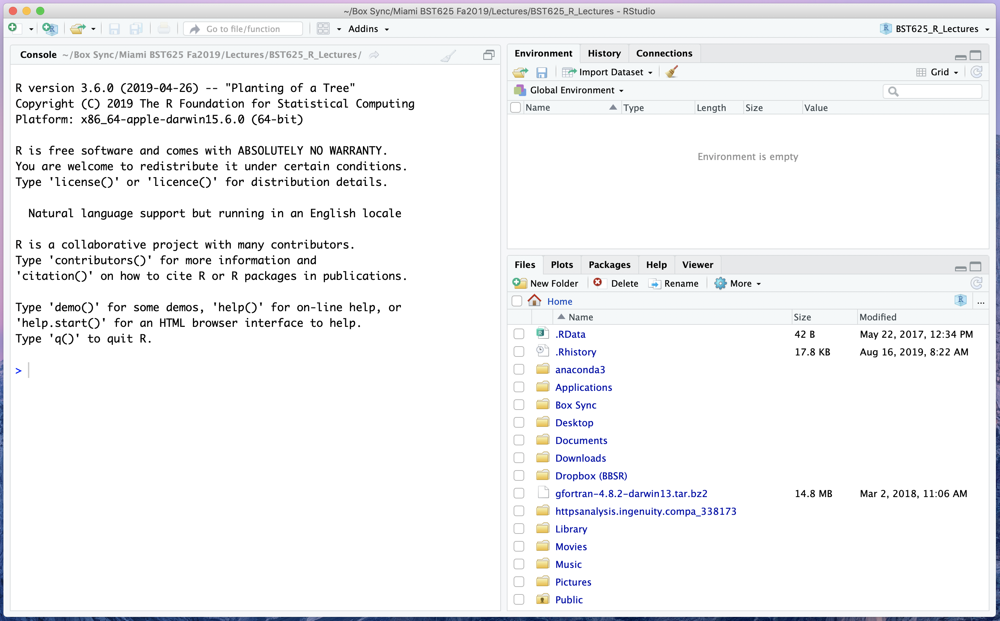
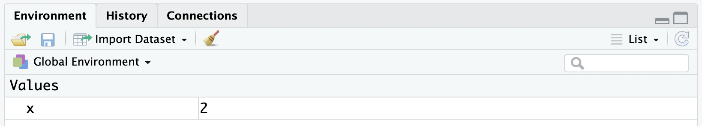
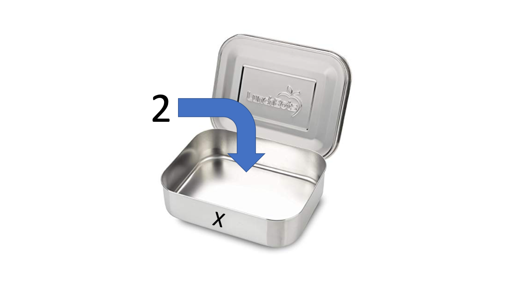

> 867 + 5309Lesson 2: Introduction to R
Review
- Data science is the intersection of statistics, code, and domain knowledge.

Data science has a few major components:
- Data Preparation and Exploration
- Data Representation and Transformation
- Computing with Data
- Modelling Data
- Visualizing and Presenting Data
- Science / Philosophy about Data Science
Reproducible research is pre-producible: research results that have been created with code can be re-created at will.
"Hello, world!"
Overview
We will cover the following:
- The RStudio Interface
- Basic Operations
- R is an “Object-Oriented” Language
- R is a “Functional” Language
- Getting Help
The RStudio User Interface
Open RStudio. We should see something like this:

This window is broken up into “panes”. Each pane is useful for different parts of our workflow. At this point in the class, the only thing we need to care about is the “Console” pane on the left (but we will make use of the other panes in short order).
Exercise
Building on the last thing we covered last class, have R greet you good morning.
Basic Operations
Now that R has told us good morning, we can learn some of the other basic things we can ask R to do.
Characters
Your first code in R last class was to instruct R to tell the world hello. R uses " (double quotes) and ' (single quotes) to mark textual information.
Exercise
Instruct R to greet your neighbour, but using single quotes instead of double quotes. What changed?
Tip
You can use the “up arrow” key to recall the last command you typed.
Scalar Arithmetic
R can do lots of powerful things, but it can also act as a very simple calculator. To add two numbers, after the > prompt, type
If you would like to chain multiple operations together, you can use multiple lines. The catch: you have to end all but your last line with an operator.
> 24 *
+ 7
Exercise
Type your age, then the plus sign (+), then hit Enter. What happens to the prompt? Can you type other commands, like a "Hello, world!"? What do you think you should do to get the original prompt back?
Note that from here on out, I will be assuming that you will type code at the proper > prompt, so I won’t include that anymore.
Why “scalar” arithmetic? Did you notice the “[1]” next to your answers? In mathematics, a scalar is a quantity represented in one dimension, or—as most commonly refer to them—numbers. We will return to this concept, and why it is important in R, shortly.
Logic
We can use R’s logic system to compare values. A simple comparison is, “is 5 less than 3”? In R, this is
5 < 3[1] FALSEThis comparison returns a logical indicator, FALSE. Notice that this value is not surrounded by quotes, and it’s also not a “number”. TRUE and FALSE are special symbols in R.
The following symbols are useful in logical comparisons:
| Symbol | Meaning | Example |
|---|---|---|
> |
greater than | 5 > 3 |
< |
less than | 5 < 3 |
>= |
greater than or equal to | 5 >= 3 |
<= |
less than or equal to | 5 <= 3 |
== |
equal to | 5 == 3 |
!= |
not equal to | 5 != 3 |
The Code Comment
Many times, we want to include notes with our code, to remind ourselves why we did what we did. In these cases, we don’t want R to try to evaluate these notes, so we use a special character to mark our notes as “code comments”.
2 + 4 + 6 + 8[1] 20# Who do you appreciate?
Exercises
- Is the character string “florida” equal to the character string “Florida”?
- Input
TRUE | FALSE. What does this evaluate to? What aboutFALSE | TRUE? What do you think the “|” symbol represents? - What simple comparison symbol should replace
???inTRUE ??? FALSEto make R returnFALSE?
Objects in R
Important
Everything in R is an object.
What is an Object?
An object is like a basket or container to hold stuff. Let’s make our very first object. We are going to create an object named x, and store the number 2 in it:
x <- 2Now, we can recall this value any time we evaluate x.
x[1] 2Now look at the “Environment” pane on the top right. You should see this:

What happened? Consider this analogy: you have a meal container, you put the number 2 in it, and you label the container as x.

So far, you have used “containers” without labelling them. When you executed 24 * 7, R created a container and put the number 168 in it. However, R is like a vigilant office administrator: anything unlabelled in the refrigerator will be tossed out! Thus, if you wanted access to this number again, you must calculate 24 * 7 from scratch.
We can perform calculations with objects just like we could with anything contained in that object. For instance, if you wanted 10 to the power of 2, we see that the following are equivalent:
10 ^ 2[1] 10010 ^ x[1] 100Just like any real lunch container, we can always empty out old food and put new food in it. To do this, we simply assign some new value to x:
x <- 3
Tip
You can use the keyboard shortcut Alt + - to insert the <- symbol with spaces around it. Recall that to use a keyboard shortcut, the “+” symbol means “press these keys at the same time”.
Exercises
- Create an object named
myStatethat holds your current state of residence (e.g., “Florida”). Use the logical check for equality to show that themyStateobject and the object “florida” are not equal. - Create a new object
ywhich isx + 3. Examiney. Now assignxto be “FL”. What happens toy? Why? What does this tell you aboutx?
Vectors
Recall that our examples had scalar values? R, however, is designed to work with ordered sets of values, known as a vector. There are a few simple ways to make vectors in R, depending on what you want these vectors to contain. Let’s first make a vector of the digits on a keypad.
keypad <- 0:9We see that the syntax a:b creates a sequence of integers from a to b. We can do everything with a vector of numbers that we could do with a scalar value:
keypad + 3 [1] 3 4 5 6 7 8 9 10 11 12keypad * 2 [1] 0 2 4 6 8 10 12 14 16 1810 - keypad [1] 10 9 8 7 6 5 4 3 2 12 ^ keypad [1] 1 2 4 8 16 32 64 128 256 512keypad < 5 [1] TRUE TRUE TRUE TRUE TRUE FALSE FALSE FALSE FALSE FALSE
Exercises
- Create a sequence from 70 to 100. How does the display of this vector differ from the display of the object
keypad? - Create a vector called
revKeypadwith the integers from 9 to 0. - All of the values we combined with the
keypadvector were scalars. Multiply two vectors together:revKeypad * keypad. What happened? Is this what you expected? - Create a new vector of integers from -1 to 1. Multiply this new vector by
keypad. What happened? Is this what you expected?
Calling Functions in R
You are probably thinking about now, “but what if I want to make a vector with something other than just sequential integers?” That’s a great question. To create some of the more complicated vectors, we need functions.
The “Concatenate” Function
One of the most important functions you will learn is the function to create simple vectors:
c(1, 3, 6, 12)[1] 1 3 6 12The c() function will put almost anything you want into a single vector, provided that they are all similar things. For instance
me <- c("Prof.", "Gabriel", "J.", "Odom", "PhD", "ThD")
me[1] "Prof." "Gabriel" "J." "Odom" "PhD" "ThD" Function Components
Functions have three main components: its name, its arguments’ names, and its arguments’ values. For instance, the function to take an arithmetic mean in R is mean(). When you type mean in the Console pane, RStudio displays a hint on how to use the function. Let’s use this hint to find the expected roll on a six-sided die:
mean(x = 1:6)[1] 3.5We unpack this as follows:
- The function is named “mean”.
- The mean function has an argument named “x”.
- We supply the vector of integers from 1 to 6 as the value to the argument “x”.
We can even put functions inside of other functions:
log(c(10, 100, 1000))[1] 2.302585 4.605170 6.907755Notice that the name of the argument to the mean() function is “x”. Most functions have named arguments, but the c() function does not. It allows you to choose your own names.
Exercises
- Create a vector of your first name, last name, and your degrees with the
c()function. - Create the same vector as above, but name each of the components as you create the vector. Hint: think back to how we referenced the name of the argument for the
mean()function.
Getting Help
Sometimes, you need to get some help with R code: https://www.youtube.com/watch?v=OzRuuFA6oUs.
To get help on any function you know the name of, type ? then the name (with no spaces). For example, to find the help file for the round() function, type
?round
Help files in R are all structured the same way. The super important parts are
- Name, Alias, and {Source}: what the function is called, {the package it comes from}, and if it is part of a group of functions
- Description: simple statement of what the function is supposed to do
- Arguments: names and descriptions of the function arguments
- Details: more information you might need to know about the function. This is usually where I look if the function is doing something I didn’t expect.
- Value: (OPTIONAL) this describes what the function returns (but not all functions return things you can see, or what they return is very basic, so this section may be missing)
- Examples: lines of code that you can run to test what the function should be doing.
The “Examples” section is where I go first, and then I go to “Arguments”, “Value” (if applicable), and “Details” after that.
We can also use Google. Websites like https://www.stackoverflow.com can be very helpful. Later on, when we use packages of R code, finding the package webiste or user guide can also be very helpful.
Exercises
- Check the help file for the
mean()function. Identify all of the major components of the help file. Run the examples. Read the “Value” section to understand the second example. - Check the help file for the
c()function. Run the first and second example. Look in the “Details” section to explain the second example. - Earlier, we took the logarithm of 10, 100, and 1000. We recall from our algebra courses that these values should be 1, 2, and 3, but R returned different numbers. Check the help file for the
log()function to find out why. What function should we use instead? - One of the most useful functions you can learn to help you troubleshoot when your code does not work is
str(). What is one major difference you can find concerning thestr()function? Hint: look near the top of the help page between the curly braces.